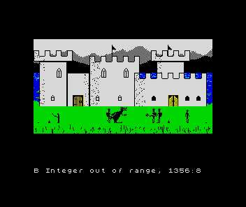
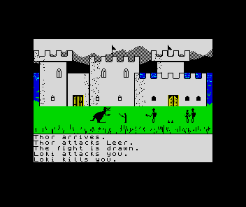

<meta charset="utf-8">
<meta name="viewport" content="width=device-width, initial-scale=1">
<title>{{title}}</title>
<link rel="preconnect" href="https://fonts.googleapis.com">
<link rel="stylesheet" href="https://fonts.googleapis.com/css2?family=Lato:wght@400;700;900&family=IBM+Plex+Mono:wght@400;500&display=swap">
<link rel="stylesheet" href="reference/valhalla-page.css">
<style>
</style>
<!-- tabs -->
<header class="hero">
  <p class="eyebrow">{{year}} · {{publisher}}</p>
  <h1>{{title}}</h1>
  <p class="sub">One number, goodness, decides who fights whom, who gives, and who follows you, and the characters who loathe you follow as faithfully as friends. The game only ever runs the place you stand in, yet the others seem to lead lives of their own.</p>
</header>
<main class="wrap">

<section>
  <p class="fig">01 · The cast</p>
  <h2 class="t">The cast, character by character</h2>
  <p class="lede">You and the 38 others are the rows of <code>c$</code>: twelve slots for objects, where each one stands, its crowns, its strength now, and six qualities packed into three bytes. Choose a figure to meet its owner.</p>
  <div class="plate">
    <div id="vh-cast" class="vh-cast vh-need" role="group" aria-label="The characters"></div>
    <div class="vh-row">
      <div class="vh-col">
        <div class="vh-card"><canvas id="vh-cfig" width="160" height="96" aria-label="The chosen character's figure"></canvas><div><h3 id="vh-cname"></h3><p id="vh-csort"></p></div></div>
        <table class="vh-kv" id="vh-ccarry"></table>
        <div id="vh-cfeel" class="vh-feel"></div>
      </div>
      <div class="vh-col" style="flex:0 1 512px">
        <canvas id="vh-cscene" class="vh-pic" width="512" height="256" aria-label="The place the chosen character starts at, with everyone who starts there"></canvas>
        <pre id="vh-cwho" class="vh-whotext" aria-label="What who prints there"></pre>
        <p class="cap" id="vh-cscap" style="margin-top:6px"></p>
      </div>
    </div>
    <div class="vh-scroll"><table class="vh-tbl" id="vh-cqual" style="margin-top:16px"></table></div>
    <p class="cap vh-need">The rows are read from the characters' table, <code>$BC23</code>, the homes from <code>$BAEF</code>, as the tape loads them. <b>The figures and the places are the game's own drawing</b>: each figure is graphics command 2 and each place the commands line 5105 sends on arrival, run through <code>$F7AF</code> in SkoolKit's Z80 simulator, and <code>test_cast.py</code> holds the pictures against that code. Objects lying there all face right, where the game turns each one at random. The names under the picture are what <code>who</code> prints (lines 6210 to 6235), from a port that <code>test_characters.py</code> holds against fifteen answers the game gave in the emulator. The inlay's numbers run from 1 to 5; the game's from 0 to 15.</p>
  </div>
  <p>Byte 17 of a row holds goodness and charisma, byte 18 strength and bravery, byte 19 brains and restlessness, each a nibble from 0 to 15 (line 50). The inlay prints the middle four divided by three and rounded up, except for Gripe's charisma, 2 in the game and 4 on the inlay, and Tyr's bravery, 13 and 4. Goodness it splits in two: 1 to 7 is printed as badness 5 to 1, and 8 to 15 as goodness 1 to 5. The game draws the same line at 8 when it decides whether a victim was good (line 1356). Restlessness is not on the inlay at all.</p>
  <p>Strength falls only when someone acts: every command costs the one doing it 5, and waiting costs nothing. Food gives back 64 and wine 32, up to full strength, which is 16 times the strength nibble plus 15. You start at 175. A character that acts until it has nothing left "dies of hunger", food or no food.</p>
</section>

<section>
  <p class="fig">02 · Goodness</p>
  <h2 class="t">The gap in goodness decides who fights and who gives</h2>
  <p class="lede">Every character measures every other by one number, how far apart the two are in goodness. Seven or more and it may attack; three or less and it may give something away.</p>
  <div class="plate">
    <div id="vh-ladder" class="vh-need"></div>
    <p class="cap" id="vh-lnote"></p>
    <p class="cap vh-need">Everyone at their goodness on the tape, and you at the goodness chosen in section 03. Choose a name: red rows are 7 or more away from it, green rows 3 or less.</p>
  </div>
  <p>The gap is <code>FN f</code> (line 59). When a character's turn comes, it looks at two others where you are, picked at random, and calls the nearer in goodness the one it likes more and the other the one it likes less (line 4050). One time in four, you are the first of the two (line 4045). If the turn's action is an attack, it attacks the one it likes less, and only if the gap is 7 or more (line 4410). If the action is a gift, it gives something it carries to the one it likes more, and only if the gap is 3 or less (line 4510). Between 4 and 6 apart, neither happens and the character steps aside.</p>
  <p>In two runs of 133 minutes of play each with nobody typing, one from the start and one beside Saga, characters attacked or threw something at each other 57 times, every one between characters at least 7 apart, and gave each other things 35 times, every one between characters at most 3 apart. <code>test_characters.py</code> holds the page's rules against each pair seen.</p>
</section>

<section>
  <p class="fig">03 · You</p>
  <h2 class="t">The characters who loathe you follow you like friends</h2>
  <p class="lede">You start at goodness 15. At that, the eleven characters of goodness 3 or less follow you as readily as your friends do, and the seventeen of goodness 7 or less refuse anything you ask.</p>
  <div class="plate">
    <div class="vh-ctl"><label>Your goodness <input id="vh-good" type="range" min="0" max="15" value="15"> <span id="vh-goodv">15</span></label><span class="vh-note">You start at 15. An attack you order can move it, a step at a time.</span></div>
    <div class="vh-scroll"><table class="vh-tbl" id="vh-you"></table></div>
    <p class="cap vh-need">Highlighted rows do what you ask two times in three. Follows you is how often the character comes after you, from the place you just left, when a turn picks it. Sells at is the least it takes for an object, as a share of the object's value, and won't sell is how often it answers an offer to buy with "refuses to sell"; pays you is what it gives for one. Click a heading to sort.</p>
  </div>
  <p>Asked to do something, a character refuses one time in three. It always refuses when the gap between you, less half your charisma of 10, is more than 2: a gap of 8 or more (line 210). When you ask the character last asked, by you or by anyone else, or the last one you traded with, it refuses 11 times in 12, which is why the same request twice in a row rarely works. A refusal gives back 4 of the 5 strength the order cost.</p>
  <p>A character standing where you have just been comes after you when its restlessness beats <code>RND*8</code> and the gap is under 5 or over 11 (line 4010). Both ends count: the game treats loathing like liking. At your starting 15, that is everyone from goodness 11 up, and everyone from 3 down: Loki, Hel, Nasher, Gastro, Gore, Kon, Rankle, Krank, Nidhog, Gripe, and Frantic. The turns stop as soon as you press ENTER, so a player who types quickly gives followers fewer chances.</p>
  <p>The gap also sets prices. A character sells an object for no less than its value times 1 plus the gap over 32, and from a gap of 10 it sometimes will not sell at all: one time in 10 at a gap of 10, rising to 6 in 15 at 15 (line 1129). Bought from you, it pays the value times 1 less the gap over 32 (line 1830). Only you can trade.</p>
</section>

<section>
  <p class="fig">04 · Changing goodness</p>
  <h2 class="t">Only an attack you order changes anyone's goodness</h2>
  <p class="lede">The inlay says that if you attack Hel and Gripe, Odin will be more co-operative than Loki, and if you attack Odin, Loki will. Attacks you order are the only thing that moves anyone's goodness, a step at a time, and from your starting 15 the first of those cannot move you at all.</p>
  <p>Line 1356 runs before every fight, and does something only when the command came from you. Then, one time in two, the attacker moves a step: up if the victim's goodness is under 8, down if it is 8 or more. The attacker is you for <code>attack</code>, the character you told for <code>Thor, attack Hel</code>, and the target for a throw you ordered, which fights back at once. Characters who fight on their own never change: in the 266 minutes of play without typing in section 02, nobody's goodness moved.</p>
  <p>You start at 15, the top. Attacking the bad cannot raise you any further, so the inlay's advice only pays after you have fallen. Attacking a good character, or telling someone to, lowers you or them a step half the time, and every step changes who will help you, follow you and attack you. Telling Thor to attack Odin makes Thor a little worse, and making Loki fight back at a good character makes Loki worse, which is where section 05 ends.</p>
  <p>The step is made on the whole of byte 17, goodness times 16 plus charisma, by adding or taking away 16. The new byte is kept only if it is not 0 and is under 255 (<code>IF x AND x&lt;CODE " COPY "</code>, the token <code>COPY</code> being 255). Two bugs follow from that guard.</p>
</section>

<section>
  <p class="fig">05 · Bug</p>
  <h2 class="t">Bug: throwing things at Loki stops the game</h2>
  <p class="lede">A step down from goodness 0 is a negative number, and <code>CHR$</code> of it stops the program with "B Integer out of range, 1356". Four characters start at goodness 1, and good characters throwing things at one of them at your order can take it below 0.</p>
  <div class="plate"><div class="vh-row">
    <div class="vh-col"></div>
    <div class="vh-col"><ol class="vh-log">
      <li><span class="vh-said">You ask Skadi to throw the food at Loki.</span></li>
      <li><span class="vh-said">Loki attacks Skadi with the axe.</span></li>
      <li><span class="vh-said">Loki attacks Skadi with the axe.</span><span class="vh-why">Loki goes from 1 to 0.</span></li>
      <li><span class="vh-said">The fight is drawn.</span></li>
      <li><span class="vh-said">…</span></li>
      <li><span class="vh-said">You ask Odin to throw the food at Loki.</span></li>
      <li><span class="vh-said">Loki attacks Odin with the axe.</span></li>
      <li><span class="vh-said">Loki attacks Odin with the axe.</span><span class="vh-why">0 less 1.</span></li>
      <li><span class="vh-said">B Integer out of range, 1356:8</span></li>
    </ol></div>
  </div>
  <p class="cap">In the emulator, from the tape's own start with nothing poked: Thor, Idun, Skadi and Odin told in turn to throw what they carried at Loki, with <code>summon</code> whenever one was missing. Loki reached goodness 0 after about five minutes of play and the game stopped after ten, at Valheim.</p></div>
  <p>A throw you order counts as your command for the fight that follows, so Loki's counterattack runs line 1356 with you as the one who gave the order. His victim is the good character who threw, so he steps down. Loki, Hel, Nasher and Gastro start at 1, and two such steps take any of them below 0. Each counterattack line is printed twice when that happens, once by the throw (line 1452) and once by line 1356 itself, which is the sign that a goodness may have moved.</p>
  <p>You can stop the game yourself the same way: every attack you make on a good character lowers you a step one time in two, and from 0 the next one stops the program. That was seen in play with your goodness poked to 0.</p>
</section>

<section>
  <p class="fig">06 · Bug</p>
  <h2 class="t">Bug: Boldir can lose his goodness of 15 for good</h2>
  <p class="lede">Boldir's byte 17 is 15 × 16 + 15, 255. A step down makes it 239, and the step back up would make it 255 again, which the guard refuses.</p>
  <p>The guard against 255 reads as a cap on goodness at 15, but it tests the whole byte, so the charisma decides where goodness stops. With charisma 15, the highest goodness a step up can reach is 14. Boldir and Loki are the two characters with charisma 15. Boldir starts at 15 and can only lose it; Loki can climb from 1 to 14 and no further. For everyone else the guard does what it should: a step up from 15 makes a byte of 256 or more, and the byte stays as it was. The arithmetic is line 1356's, the same expression that section 05 saw fail at the other end.</p>
</section>

<section>
  <p class="fig">07 · A lone companion</p>
  <h2 class="t">A character alone with you does nothing</h2>
  <p class="lede">A turn needs a second character here besides the one acting. With only one character where you are, it never eats, drinks, drops, gives, attacks, steps aside or leaves.</p>
  <p>Line 4040 picks two characters from those here, at random and possibly the same one twice, and tries again, up to three times, if either is the one whose turn it is. With only one character here, both picks are always that character, so after three tries the turn ends with nothing done. You are not in the list it picks from; you are only brought in afterwards, one time in four. The character stays put until someone arrives, which the comings and goings of section 09 arrange one time in two on each pass of the main loop.</p>
  <p>In the two runs of section 02, a single character was alone with you for 26 minutes in all, and did nothing in any of them. The first character to arrive brought it back to life: "Gripe arrives." and then "Saga attacks Gripe."</p>
</section>

<section>
  <p class="fig">08 · Off stage</p>
  <h2 class="t">Nothing happens where you are not</h2>
  <p class="lede">Only the place you are at is ever run. A character elsewhere keeps its place, its things and its strength until it comes to you.</p>
  <p>Every turn, every fight and every meal happens among the characters where you are. A character's place changes on four lines only: when it leaves (5705, which also sends off the defeated and the crowded), arrives (5760), dies (5630), or is Klepto carrying off something you put down (5320). Each runs only for a character where you are or coming to you. After the run from the start, the 20 characters never named in its 133 minutes of text had rows exactly as the tape loaded them, to the byte; in the run beside Saga, 31.</p>
  <p>So no one starves, eats or fights out of sight. Instead, when you arrive at a place, everyone there is put back to full strength (line 5122), and so is every character that arrives where you are (line 5760). A character killed in a fight comes back at full strength at a random place, keeping its weapon, shield, helmet and crowns, with the rest of what it carried scattered across the map (lines 5615 to 5630). Seen from where you stand, the others have been eating and resting while you were away.</p>
</section>

<section>
  <p class="fig">09 · Comings and goings</p>
  <h2 class="t">The game keeps two to four characters around you</h2>
  <p class="lede">In the run from the start, two to four others were with you 83 % of the time, and in the run beside Saga 94 %. Three rules bring characters to wherever you are: a home there, following you, and a stage manager that fills an empty place and thins a crowded one.</p>
  <div class="plate">
    <canvas id="vh-hmap" class="vh-map" width="396" height="396" aria-label="The 81 places, with how many characters live at each"></canvas>
    <p class="cap vh-need" id="vh-hinfo"></p>
    <p class="cap vh-need">The number in a circle is how many characters have their home there, the third byte of their row in <code>p$</code>, <code>$BAEF</code>. Click a place to see who.</p>
  </div>
  <p><b>Homes.</b> Every turn first picks one of the 38 at random. If it is somewhere else and its home is here, it arrives, wherever it was (line 4010). Each character's home is the place it starts at, except Idun, who starts at Valheim and lives at place 53, and Snake and Raven, who have none. That is why Loki keeps coming back to Valheim: killed, defeated or sent away, he walks in again a few turns later. In the run from the start, 19 of the 41 arrivals were of characters whose home it was.</p>
  <p><b>Followers.</b> The same pick brings in a character from the place you just left, as section 03 describes.</p>
  <p><b>The stage manager.</b> Once a pass, lines 5500 to 5526 count the others here. With none or one, one time in two a character from anywhere walks in. With five or more, one time in two one is sent to a neighbouring place, usually a restless one that is not too good. With two to four, nothing happens. At the start, five others are a crowd, and Loki, restless and bad, was the one sent away, north to place 80: the line that printed "Loki leaves." had been called from line 8120's <code>GO SUB 5500</code>.</p>
  <p>A character that leaves on its own (one of the six actions of section 10) goes to any of the 81 places, at random, and stays there, frozen, until one of these rules or a <code>summon</code> brings it back.</p>
</section>

<section>
  <p class="fig">10 · A turn</p>
  <h2 class="t">What a character does when its turn comes</h2>
  <p class="lede">Up to ten turns run on each pass of the main loop while no command is waiting. Each picks one character here at random, and that character picks one of six actions at random, which its qualities may then turn down.</p>
  <div class="plate"><div class="vh-row">
    <div class="vh-col" style="flex:0 0 352px"></div>
    <div class="vh-col"><ol class="vh-log">
      <li><span class="vh-said">Loki leaves.</span><span class="vh-why">Five others is a crowd, and Loki is restless and bad (line 5517).</span></li>
      <li><span class="vh-said">Idun drops the food.</span><span class="vh-why">Brains 4: she drops things (4310).</span></li>
      <li><span class="vh-said">Thor gives the wine to you.</span><span class="vh-why">You are one of the two picked, and 0 apart (4045, 4510).</span></li>
      <li><span class="vh-said">Thor gives the food to Idun.</span><span class="vh-why">0 apart.</span></li>
      <li><span class="vh-said">Leer eats the food.</span><span class="vh-why">Food in view is eaten (4220).</span></li>
      <li><span class="vh-said">Loki arrives.</span><span class="vh-why">Valheim is his home (4010).</span></li>
      <li><span class="vh-said">Loki throws the fireball at Thor.</span><span class="vh-why">14 apart. One time in three an attack on its own turn is a throw (4420).</span></li>
      <li><span class="vh-said">Thor attacks Loki with the axe.</span><span class="vh-why">The target of a throw fights back (1452).</span></li>
      <li><span class="vh-said">Thor kills Loki.</span></li>
      <li><span class="vh-said">Leer attacks Thor.</span><span class="vh-why">11 apart.</span></li>
      <li><span class="vh-said">Thor kills Leer.</span></li>
      <li><span class="vh-said">Leer arrives.</span><span class="vh-why">Back from the dead at full strength, and home.</span></li>
      <li><span class="vh-said">Leer asks Idun to give the food to Thor.</span><span class="vh-why">Section 11.</span></li>
      <li><span class="vh-said">Idun refuses to give the food to Thor.</span><span class="vh-why">Leer is 11 from her; less half his charisma of 6, that is over 2 (210).</span></li>
    </ol></div>
  </div>
  <p class="cap">The first six minutes of play from the start, in the emulator, with nobody typing, and the rule behind each line. The screen is the same run 32 minutes in, when Loki, 14 from you, picked you as the one he liked less.</p></div>
  <p>The six actions (line 4070): leave for a random place, one time in two (4105); take what is in view, eating food and drinking wine, though Klepto leaves axes and swords where they lie (4205); drop something carried, unless clever (4310); attack the one it likes less, or one time in three throw something at it (4410); give something to the one it likes more (4510); or step a column left or right (4610). The objects a character takes, gives, drops and throws come from its slots 4 to 12, never its weapon, shield or helmet, and it never picks up a quest object.</p>
  <p>The program runs <code>RANDOMIZE</code> with no number at the start of each pass (8100), before each action (4070, 4105) and after every line it prints (5021), which seeds the random numbers from the Spectrum's frame counter. How long you take to type changes what happens next, and two games from the same tape soon part ways.</p>
</section>

<section>
  <p class="fig">11 · Orders</p>
  <h2 class="t">The clever are the ones who are told what to do</h2>
  <p class="lede">The inlay says the more intelligent characters often ask others to do their fighting for them. The program does it the other way round.</p>
  <p>On a character's turn, if its brains are over 7 (and one time in ten when they are not), then one time in two another character here is picked at random to give it the order (line 4057). The text says "Skadi asks Saga to drop the key.", the order can be refused as one of yours can (line 210), and the clever one, under orders, may now drop things. In the two runs of section 02, 42 orders were given between characters. In 41 the one told had brains over 7: Saga 20 times, Boldir 12. Skadi, with brains of 3, gave ten of them.</p>
</section>

</main>
<footer style="margin:16px 0 0;padding:22px var(--gx) 0;border-top:1px solid #e0ded8;font-family:'IBM Plex Mono',ui-monospace,Menlo,monospace;font-size:12px;color:#80838a"><a href="https://github.com/gamesexplained/gamesexplained" aria-label="GitHub" style="display:inline-flex;align-items:center;justify-content:center;width:26px;height:26px;margin-left:8px;border:1px solid #e0ded8;border-radius:7px;background:#ffffff;color:#80838a;vertical-align:middle"><svg width="15" height="15" viewBox="0 0 24 24" fill="currentColor" aria-hidden="true"><path d="M12 .297c-6.63 0-12 5.373-12 12 0 5.303 3.438 9.8 8.205 11.385.6.113.82-.258.82-.577 0-.285-.01-1.04-.015-2.04-3.338.724-4.042-1.61-4.042-1.61C4.422 18.07 3.633 17.7 3.633 17.7c-1.087-.744.084-.729.084-.729 1.205.084 1.838 1.236 1.838 1.236 1.07 1.835 2.809 1.305 3.495.998.108-.776.417-1.305.76-1.605-2.665-.3-5.466-1.332-5.466-5.93 0-1.31.465-2.38 1.235-3.22-.135-.303-.54-1.523.105-3.176 0 0 1.005-.322 3.3 1.23.96-.267 1.98-.399 3-.405 1.02.006 2.04.138 3 .405 2.28-1.552 3.285-1.23 3.285-1.23.645 1.653.24 2.873.12 3.176.765.84 1.23 1.91 1.23 3.22 0 4.61-2.805 5.625-5.475 5.92.42.36.81 1.096.81 2.22 0 1.606-.015 2.896-.015 3.286 0 .315.21.69.825.57C20.565 22.092 24 17.592 24 12.297c0-6.627-5.373-12-12-12"/></svg></a><a href="https://discord.gg/3V9GWyRDWV" aria-label="Discord" style="display:inline-flex;align-items:center;justify-content:center;width:26px;height:26px;margin-left:8px;border:1px solid #e0ded8;border-radius:7px;background:#ffffff;color:#80838a;vertical-align:middle"><svg width="15" height="15" viewBox="0 0 24 24" fill="currentColor" aria-hidden="true"><path d="M20.317 4.3698a19.7913 19.7913 0 00-4.8851-1.5152.0741.0741 0 00-.0785.0371c-.211.3753-.4447.8648-.6083 1.2495-1.8447-.2762-3.68-.2762-5.4868 0-.1636-.3933-.4058-.8742-.6177-1.2495a.077.077 0 00-.0785-.037 19.7363 19.7363 0 00-4.8852 1.515.0699.0699 0 00-.0321.0277C.5334 9.0458-.319 13.5799.0992 18.0578a.0824.0824 0 00.0312.0561c2.0528 1.5076 4.0413 2.4228 5.9929 3.0294a.0777.0777 0 00.0842-.0276c.4616-.6304.8731-1.2952 1.226-1.9942a.076.076 0 00-.0416-.1057c-.6528-.2476-1.2743-.5495-1.8722-.8923a.077.077 0 01-.0076-.1277c.1258-.0943.2517-.1923.3718-.2914a.0743.0743 0 01.0776-.0105c3.9278 1.7933 8.18 1.7933 12.0614 0a.0739.0739 0 01.0785.0095c.1202.099.246.1981.3728.2924a.077.077 0 01-.0066.1276 12.2986 12.2986 0 01-1.873.8914.0766.0766 0 00-.0407.1067c.3604.698.7719 1.3628 1.225 1.9932a.076.076 0 00.0842.0286c1.961-.6067 3.9495-1.5219 6.0023-3.0294a.077.077 0 00.0313-.0552c.5004-5.177-.8382-9.6739-3.5485-13.6604a.061.061 0 00-.0312-.0286zM8.02 15.3312c-1.1825 0-2.1569-1.0857-2.1569-2.419 0-1.3332.9555-2.4189 2.157-2.4189 1.2108 0 2.1757 1.0952 2.1568 2.419 0 1.3332-.9555 2.4189-2.1569 2.4189zm7.9748 0c-1.1825 0-2.1569-1.0857-2.1569-2.419 0-1.3332.9554-2.4189 2.1569-2.4189 1.2108 0 2.1757 1.0952 2.1568 2.419 0 1.3332-.946 2.4189-2.1568 2.4189Z"/></svg></a><br>© Games Explained contributors. Write-ups, facts and symbol maps are available under <a href="https://creativecommons.org/licenses/by-sa/4.0/" style="color:#1f5fa8;text-decoration:none">CC BY-SA 4.0</a>; code under <a href="https://opensource.org/licenses/MIT" style="color:#1f5fa8;text-decoration:none">MIT</a></footer>
<!-- the listing pieces this page's widgets read, which the build fills in from the listing -->
<script type="application/json" data-listing="listing.json">["dictionary", "dict_objects", "dict_places", "objects_table", "characters_table", "map_table", "map_hell", "map_midgard", "special_places"]</script>
<script src="../../lib/spectrum.js"></script>
<script src="reference/valhalla-page.js"></script>
